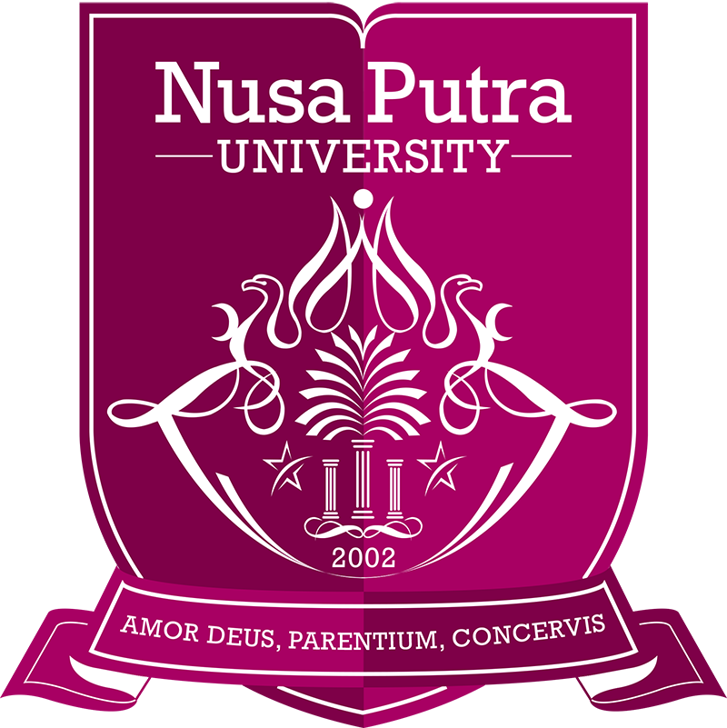

Wildan Fadillah
Software Engineer & Fullstack Developer yang berfokus pada pengembangan aplikasi web end-to-end, arsitektur backend, optimasi database, serta pembuatan script otomasi untuk efisiensi operasional.

Universitas Nusa Putra
Penerima Beasiswa Bupati Sukabumi
Penghargaan beasiswa penuh pemerintah daerah atas prestasi akademik untuk menempuh studi sarjana Teknik Informatika di Universitas Nusa Putra.
UKMK Jurnalis Nuansa — Koordinator Kewirausahaan
Bertanggung jawab atas pengadaan atribut resmi anggota (PDH, rompi liputan, lanyard dan lainnya), dan perancangan serta penjualan merchandise organisasi


 UKMK Jurnalis Nuansa • 2024–2025
UKMK Jurnalis Nuansa • 2024–2025
PT Sumber Alfaria Trijaya Tbk
Pengembangan full-stack dengan Next.js dan PostgreSQL untuk mendigitalkan alur kerja pembangunan dan renovasi toko serta Distribution Center (DC) Alfamart di seluruh Indonesia.
SPARTA BUILDING
Gambaran beberapa menu utama untuk memantau jalannya sistem yang ada pada SPARTA BUILDING.
Memantau tahapan seluruh proyek toko secara menyeluruh, mulai dari perencanaan hingga serah terima.
Melihat kinerja tim internal dalam ketepatan jadwal pengawasan dan kecepatan persetujuan dokumen.
Menilai hasil kerja kontraktor dari ketepatan waktu, kualitas bangunan, hingga catatan Surat Peringatan (SP).
Tampilan jadwal visual untuk memudahkan pemantauan urutan kerja dan target waktu penyelesaian.


SPARTA DC-DEVELOPMENT
Gambaran beberapa menu utama untuk memantau jalannya sistem yang ada pada SPARTA DC-Development.
Gerbang masuk sistem berbasis kredensial cabang dan autentikasi multi-role untuk akses arsip.
Daftar lengkap seluruh gudang (DC) beserta informasi kode cabang, jenis gudang, dan ukuran luas bangunannya.
Halaman untuk memantau kelengkapan berkas dan status penyimpanan dokumen di setiap jenis gudang.
Daftar rekanan kontraktor dan konsultan lengkap dengan kategori perusahaan, kontak yang bisa dihubungi, serta dokumen izin resminya.